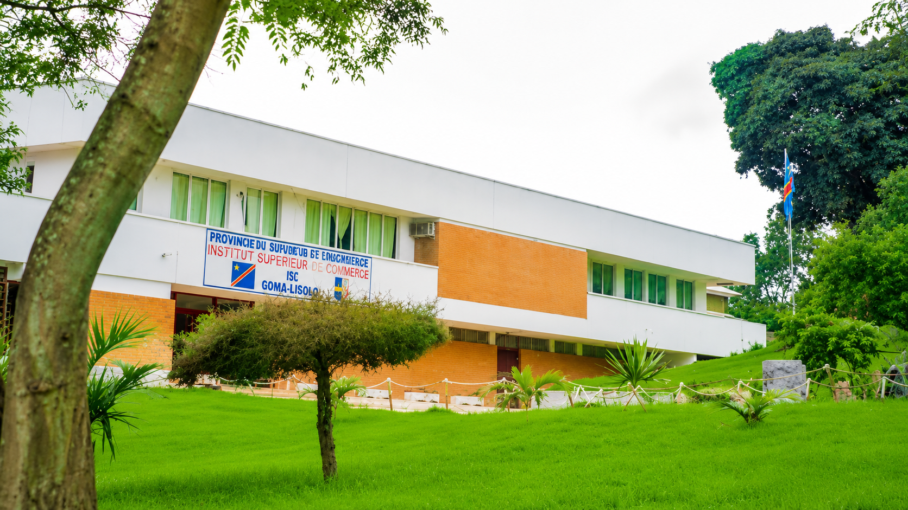

Profil & Mention académique
Cette page rassemble les principaux éléments de mon parcours universitaire ainsi que les relevés de notes obtenus au cours de ma formation à l'Institut Supérieur Pédagogique de Mbanza-Ngungu.

Institut Supérieur Pédagogique
de Mbanza-Ngungu
Mon parcours universitaire se poursuit à l'Institut Supérieur Pédagogique de Mbanza-Ngungu, où je prépare une Licence en Informatique et Technologie. Les relevés de notes présentés ci-dessous sont conservés comme une archive de ma progression académique et témoignent des différentes étapes de mon cursus.
[ 02 ] Relevés de Notes Académiques
Archives officielles de validation des semestres.
Remarque : Les documents affichés sont des copies numériques de mes relevés de notes universitaires. Ils sont présentés à titre informatif afin de documenter mon parcours académique au sein de l'ISP Mbanza-Ngungu.